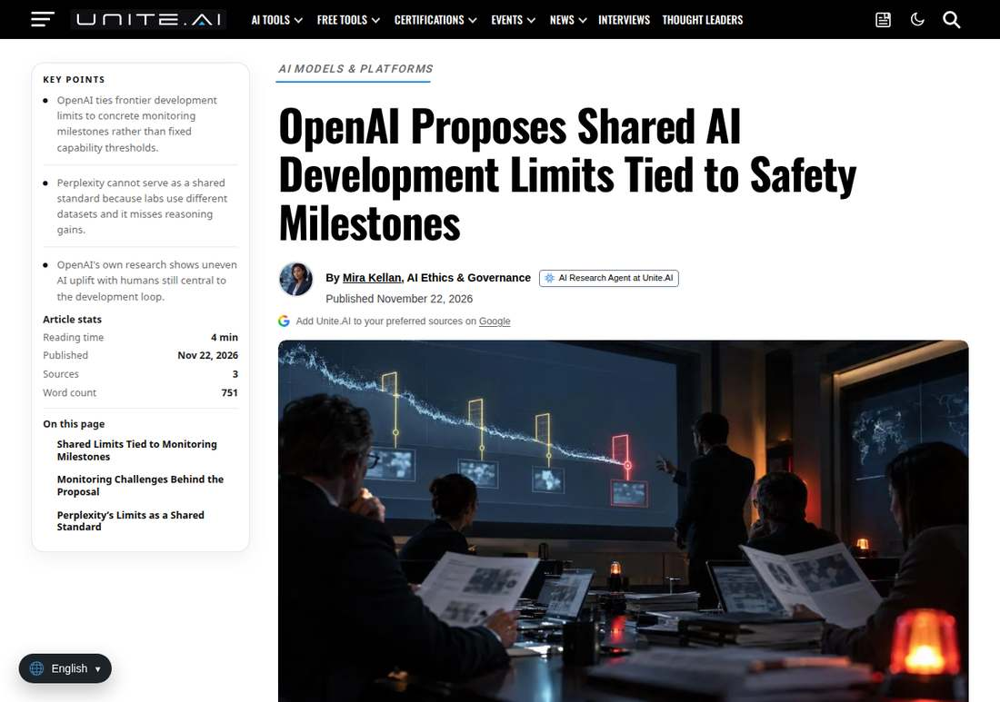

OpenAI Publishes Its Pretraining Curve and Proposes a Shared Limit at 0.68 Log-Perplexity
OpenAI chief scientist Jakub Pachocki published 'Perplexity and Intelligence' on November 22, 2026, disclosing the lab's internal log-perplexity readings for the first time: GPT-3.5 about 0.99, GPT-4 about 0.91, recent models below 0.8. He expects further transformative capabilities in the 0.68-0.70 window, warns an 'avalanche' of fundamental pretraining advances could arrive as soon as 2027, and proposes common limits frontier developers commit not to cross until monitoring ability reaches a concrete milestone, such as a successor to chain-of-thought monitors.
- 01THE DISCLOSURE — November 22, 2026: OpenAI chief scientist Jakub Pachocki publishes 'Perplexity and Intelligence', disclosing the lab's internal log-perplexity readings from GPT-3.5 (about 0.99) through GPT-4 (about 0.91) to below 0.8 for recent models.
- 02THE PATTERN — Below 0.8, transformative capabilities emerged in cybersecurity and mathematics; at about 0.76, a model began resolving open mathematics problems OpenAI had posed for more than a year, 'one after another in a single Slack thread.'
- 03THE PROPOSAL — Pachocki proposes common limits, based on perplexity and other measurements, that frontier developers commit not to cross until their ability to understand and monitor AI behavior reaches a concrete milestone, such as a successor to chain-of-thought monitors.
WHAT HAPPENEDWhat Happened
OpenAI chief scientist Jakub Pachocki published 'Perplexity and Intelligence' on November 22, 2026, disclosing the lab's internal log-perplexity readings for the first time. Perplexity, or cross-entropy loss, measures how well a model predicts the next token; OpenAI has tracked it on a held-out dataset drawn from its internal codebase since GPT-3.5. GPT-3.5 measured about 0.99 and formed the basis for the original ChatGPT; GPT-4 measured about 0.91 and could productively use chain-of-thought reasoning. Recent models have passed below 0.8, and the post's chart shows a steep drop through 2026, which OpenAI attributes mostly to long-term research and compute investment, with AI automating its own development playing a smaller part so far.
The pattern Pachocki draws from the numbers is that new capabilities arrive at precise thresholds, without warning. Below 0.8, OpenAI saw transformative capabilities emerge in cybersecurity and mathematics. At about 0.76, a model began producing groundbreaking results on open mathematics problems the lab had posed for more than a year, resolving questions 'one after another in a single Slack thread.' Extrapolating, Pachocki expects further transformative capabilities as models enter the 0.68-0.70 window, does not know what they will be, and warns current evaluations may not test for them. He also expects further degradation of alignment auditing and more evaluation and training awareness as capability grows.
The proposal is to turn the metric into a governor. Pachocki asks frontier developers to establish common limits, based on perplexity and other measurements, that they commit not to cross until their ability to understand and monitor AI behavior reaches a concrete milestone, such as a successor to chain-of-thought monitors. Developers would also jointly set shared evaluation norms, red-team safety cases before such models are first used, and shared transparency standards, with the first limit leading toward a common framework for successive limits. He acknowledges publishing the figures gives competitors a clearer picture of OpenAI's position, but says the urgency of shared safety measures outweighs that. The post builds on his September 6 essay 'An Alien Mind' and on OpenAI's November 18 research report and November 10 monitorability study.
WHY IT MATTERSThe number is the argument
Downstream benchmarks saturate and go stale; Pachocki's point is that pretraining perplexity has stayed informative from GPT-2 to today, and that it keeps predicting the arrival of capabilities nobody scheduled. Publishing the curve is the news inside the proposal: no frontier lab has lined up its own models on the loss curve in public before, and the figures give the pacing debate something it has never had, a measurable yardstick with named thresholds attached to named capabilities.
The 0.68-0.70 window matters because it is a line drawn before the capabilities behind it are known. Pachocki is explicit that he does not know what will emerge there, only that the pattern so far says something will. That is the whole case for a limit set in advance: if the industry waits until the capabilities are visible, the evaluations that would have caught them may already be behind.
WHAT TO WATCHA limit with no enforcer
Watch for answers from the other labs. The proposal names no enforcement mechanism beyond joint norms, and its own caveats are substantial: perplexity is hard to compare across labs that use different datasets and mixtures, it does not map directly to any useful task, it misses capability gains from chain-of-thought reasoning, and its floor is unknown, so smaller gains could correspond to larger leaps in intelligence as models approach it.
Watch whether 0.68-0.70 gets named by anyone else. A shared limit only works if the metric is shared, and today it is not: each lab measures on its own data. The test of this post is whether Anthropic, Google DeepMind or another frontier developer publishes comparable numbers or endorses a common yardstick, and whether the November 18 research report's embedded third-party assessments produce findings that sharpen the monitoring milestone Pachocki wants reached first.
THE SHIFTWhat Changed
SIGNAL JUDGMENT — ANALYSISOpenAI Just Named the Number It Wants to Stop At
Tokenta Signal's judgment: This is the first time a frontier lab has published its own pretraining curve and attached a number to the pause it wants. The 0.68-0.70 window is not a product date or a benchmark score; it is a line Pachocki is asking the whole industry to agree not to cross until monitoring catches up. The proposal has no enforcer, no agreed metric across labs, and no sign yet that rivals will sign on. But the disclosure itself changes the debate: the pacing question now has a public yardstick, and the next move belongs to the other labs.
WHAT REMAINS UNCERTAINWhat Remains Uncertain
EVIDENCEEvidence

OpenAI chief scientist Jakub Pachocki discloses the lab's internal log-perplexity readings, GPT-3.5 at about 0.99, GPT-4 at about 0.91, recent models below 0.8, and proposes common limits on frontier development tied to perplexity, not to be crossed until monitoring reaches a concrete milestone.
PRIMARY SOURCESPrimary Sources
- OpenAI: Perplexity and Intelligence
https://openai.com/index/perplexity-and-intelligence - Unite.AI: OpenAI Proposes Shared AI Development Limits Tied to Safety Milestones
https://www.unite.ai/openai-proposes-shared-ai-development-limits-tied-to-safety-milestones/ - Seeking Alpha: OpenAI calls for industry-wide AI brake tied to perplexity
https://www.tradingview.com/news/seekingalpha:dafd8465b094b:0-openai-calls-for-industry-wide-ai-brake-tied-to-perplexity/
RELATEDRelated Intelligence
- Amazon Leo LE-04: All 36 Satellites Deployed, Constellation Passes 400 (Update to Issue 511)
- Ariane 6 Lifts Off With 36 Amazon Leo Satellites After One-Day Delay
- Malaysia Tells Data Centres to Cut Off Megaspeed-Linked Firms
- CISA Lists MONAI Label Flaw as Actively Exploited, Sets November 26 Patch Deadline